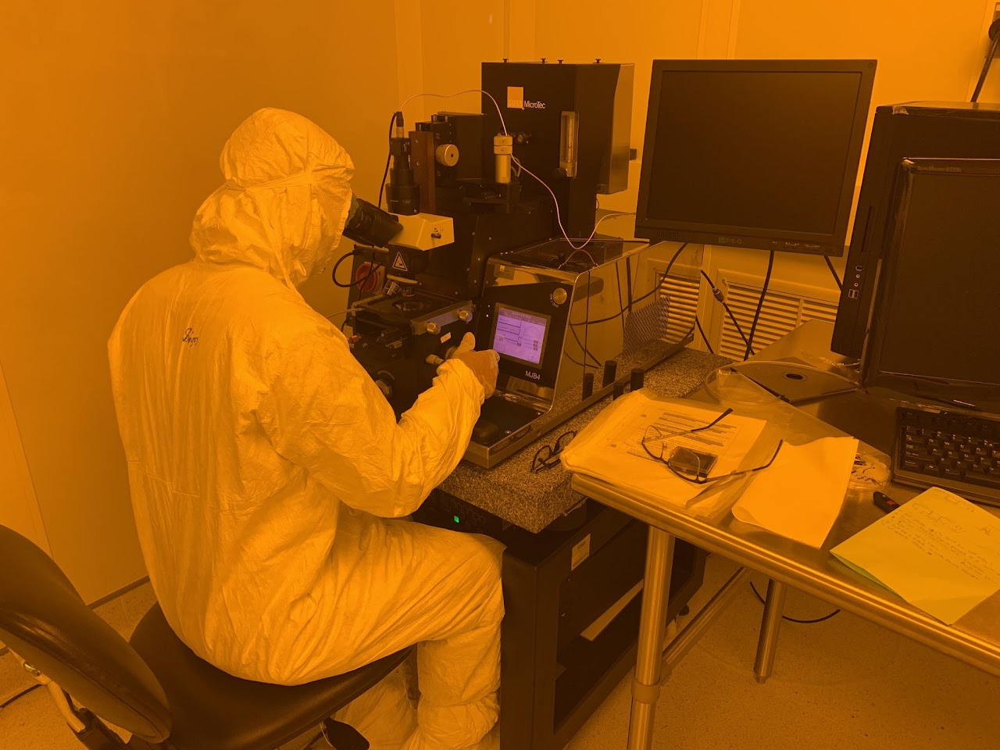
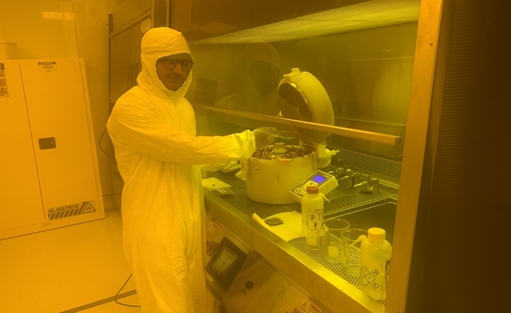

𝐑𝐞𝐬𝐞𝐚𝐫𝐜𝐡 𝐒𝐤𝐢𝐥𝐥𝐬: Electrochemical, Analytical, Spectroscopic, Microscopic, Problem-Solving, Nanofabrication, DFT.
𝐄𝐥𝐞𝐜𝐭𝐫𝐨𝐜𝐡𝐞𝐦𝐢𝐜𝐚𝐥 𝐒𝐤𝐢𝐥𝐥𝐬: Process reversibility and Faradaic and capacitive analysis (GCD, 𝐂𝐕, 𝐝𝐐/𝐝𝐕), quantitative analysis of insertion-reaction type electroactive components and diffusive behavior analysis (𝐆𝐈𝐓𝐓), time and frequency domain analysis for adsorption, migration or diffusion behavior identification (𝐄𝐈𝐒)

𝐂𝐡𝐚𝐫𝐚𝐜𝐭𝐞𝐫𝐢𝐳𝐚𝐭𝐢𝐨𝐧 𝐒𝐤𝐢𝐥𝐥𝐬: Morphological and spectroscopic analysis for fine micro or nanoscale feature analysis, exploring crystallinity of materials and chemical bonding states.
𝐃𝐞𝐬𝐢𝐠𝐧 𝐚𝐧𝐝 𝐆𝐫𝐚𝐩𝐡𝐢𝐜𝐬 𝐒𝐤𝐢𝐥𝐥𝐬: Autocad, Solidworks, ImageJ.
𝐏𝐫𝐨𝐠𝐫𝐚𝐦𝐦𝐢𝐧𝐠 𝐒𝐤𝐢𝐥𝐥𝐬: MATLAB, C++
𝗡𝗮𝗻𝗼𝗳𝗮𝗯𝗿𝗶𝗰𝗮𝘁𝗶𝗼𝗻 𝗦𝗸𝗶𝗹𝗹𝘀: 𝗖𝗹𝗮𝘀𝘀 𝟭𝟬,𝟬𝟬𝟬 (ISO 7) clean room training completion on 𝗘𝗕𝗟 and 𝗣𝗵𝗼𝘁𝗼𝗹𝗶𝘁𝗵𝗼𝗴𝗿𝗮𝗽𝗵𝘆 at NCMN Nanofab facility, top-down 2D material synthesis (micromechanical cleavage, liquid exfoliation, selective transfer process.
𝐓𝐡𝐞𝐨𝐫𝐞𝐭𝐢𝐜𝐚𝐥 𝐒𝐤𝐢𝐥𝐥𝐬: Modeling of the periodic structure, geometry optimization, electron density analysis, vibrational frequency analysis, transition state search (𝐕𝐀𝐒𝐏)